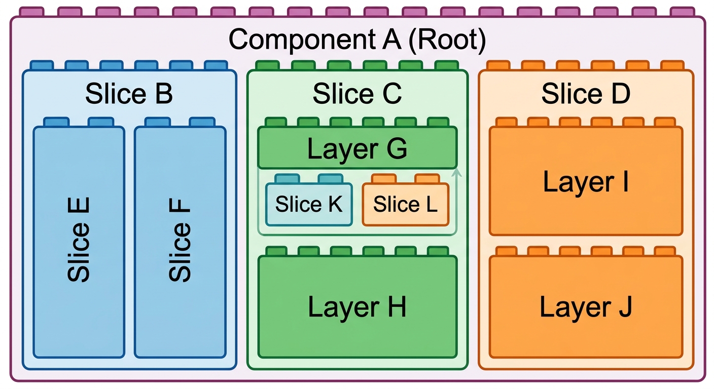

<!DOCTYPE html>
<html>

<head>
    <title>Ramblings on Software</title>
    <meta name="viewport" content="width=device-width, initial-scale=1">
    <link rel="stylesheet" href="https://fonts.googleapis.com/css2?family=Roboto">

    <style>
        * {
            box-sizing: border-box;
            margin: 0;
        }

        :root {
            /* font-family: Roboto, Tahoma, sans-serif; */
            font-family: system-ui;
            line-height: 1.5;

            --body-width: 90ch;
            --nav-width: 15em;
        }

        html {
            color-scheme: light dark;
        }

        body {
            max-width: min(var(--body-width), 100% - 4rem);
            margin: 1em auto 5em auto;
            background-color: white;
            color: #222;
        }

        article {
            margin-bottom: 1.5em;
            display: flex;
            flex-direction: column;
            gap: 0.7em;
            border-top: 1px solid #ddd;
            padding-top: 1em;
        }

        aside {
            color: #555;
            margin-top: 0.1em;
        }

        h1 {
            font-size: 2em;
        }

        h2 {
            font-size: 1.7em;
        }

        h3 {
            font-size: 1.3em;
            font-weight: 500;
        }

        p {
            margin-bottom: 0.7em;
        }

        ul {
            /* list-style: none; */
            padding: 0;
            margin-left: 1.5em;
            display: flex;
            flex-direction: column;
            gap: 0.5em;
        }

        a {
            font-weight: 600;
        }

        #links a::before {
            content: '» ';
        }

        li>ul {
            margin-top: 0.5em;
        }

        nav {
            position: fixed;
            display: flex;
            flex-direction: column;
            gap: 0.7em;
            margin-left: calc(-1 * var(--nav-width) - 1em);
            width: var(--nav-width);
            margin-top: 6em;
        }

        nav a {
            line-height: normal;
        }

        @media (max-width: 170ch) {
            nav {
                display: none;
            }
        }

        header {
            display: flex;
            align-items: center;
            gap: 1em;
            margin-bottom: 1.5em;
        }

        a,
        a:active a:visited {
            color: #2323a1;
            text-decoration: none;
        }

        a:hover {
            color: #4d4da1;
        }

        .warning {
            display: flex;
            flex-direction: row;
            gap: 1em;
            font-weight: 600;
        }

        pre {
            border: 1px solid #accc;
            border-radius: 5px;
            padding: 0.5em 1em;
            background: #fafafa;
        }
    </style>
</head>

<body>

    <nav id="navigation">
        <b>Navigation</b>
        <!-- auto-populated -->
    </nav>

    <header>
        <div>
            <h1>Ramblings on Software</h1>
            <aside>A collection of opinions on software engineering and architecture.</aside>
            <aside>by CR</aside>
        </div>
    </header>

    <article id="links">
        <h2>Links</h2>
        <div>
            An incredibly outdated collection of links to stuff that I found interesting:
        </div>
        <div>
            <a href="https://codeopinion.com/" target="_blank">
                CodeOpinion
            </a>
            <aside>A blog with lots of bite-sized advice on practical architecture topics.</aside>
        </div>
        <div>
            <a href="https://www.youtube.com/watch?v=88_LUw1Wwe4" target="_blank">
                Top 5 techniques for building the worst microservice system ever - William Brander - NDC London 2023
            </a>
            <aside>Fun and easy to understand overview of common pitfalls with microservices.</aside>
        </div>
        <div>
            <a href="https://daedtech.com/how-developers-stop-learning-rise-of-the-expert-beginner/" target="_blank">
                How Developers Stop Learning: Rise of the Expert Beginner
            </a>
            <aside>An observation on engineers, who think that they have found the "best" way to do things.</aside>
        </div>
        <div>
            <a href="https://www.youtube.com/watch?v=099cHWSbAL8" target="_blank">
                How to crash an airplane – Nickolas Means | The Lead Developer UK 2016
            </a>
            <aside>A nice story about how teams should work together.</aside>
        </div>
    </article>

    <article id="guidelines">
        <h2>Guidelines</h2>
        <div>
            Many of the following guidelines are specific to .NET simply because that is the ecosystem I have
            the most experience with, but they can easily be applied to other environments.
        </div>
        <div>
            These guidelines are what works for <i>me</i> and the type of long-running projects I tend to work on.
            This list is not intended to be authoritative, but a list of topics to think about.
        </div>
        <div class="warning">
            
            <div>
                <div>These are guidelines, not rules.
                    Use them as reasonable default options.
                    Understand the risks and implications.
                    Break them when oppropriate.</div>
            </div>
        </div>

        <h3>Domain Driven Design</h3>
        <ul>
            <li>
                Your architecture and API design should exist to support the domain, NOT to support
                arbitrary patterns!
            </li>
            <li>Focus on the <b>strategic</b> aspects of DDD
                <ul>
                    <li>Establish a ubiquitous language or glossary to define, map and translate
                        terms between the domain language and the technical.</li>
                    <li>Establish bounded contexts! Keep related stuff together but purposefully
                        isolate it from other contexts.</li>
                </ul>
            </li>
            <li>
                <b>Know the tactical patterns</b> of DDD like entities, aggregates, value objects,
                repositories, etc. but <b>do not let them guide</b> your system's architecture.
                Tactical patterns are tools. Only use them when appropriate and always know their
                downsides.
            </li>
        </ul>

        <h3>Slices and Layers</h3>
        <ul>
            <li>Structuring your micro-architecture as <i>slices</i> and <i>layers</i> is a simple, pragmatic and scalable approach. You can always switch to a more tailored structure later.
                <ul>
                    <li><i>Slices</i> are vertical. They represent a bounded logical feature and sit next to each other within their parent component.</li>
                    <li><i>Layers</i> are horizontal. They represent a bounded technical responsibility or abstraction. They sit stacked on top of each other within their parent component.</li>
                </ul>
            </li>
            <li>Every component should structure its sub-components as <i>either</i> a set of slices, or a set of layers.</li>
            <li>These structures can be nested. A sliced component can contain a sub-component that uses layers. One of the layers can have sub-components that use slices again.</li>
        </ul>

        

        <h3>Interface Design</h3>
        <ul>
            <li>Give every feature a well-designed API</li>
            <li>Do NOT assume the lifecycle of the caller (they might be a short-lived API controller instance or a long-lived background service, both has to work)</li>
            <li>Do NOT leak implementation details (e.g. internal DTOs or DB entities)</li>
            <li>Do NOT allow the representation of states that are invalid for the domain
                (e.g. if you have two properties but the allowed values in one depends on the value in the other, choose a different design)</li>
            <li>
                DO use types that clearly show what promises your API makes. For example:
                <ul>
                    <li>If a method accepts an IEnumerable, it must be able to handle all (reasonable) implementations - including one that yields an infinite number of items.</li>
                    <li>If a method accepts a collection of items but implicitly expects the items to be unique, demand a set instead.</li>
                </ul>
            </li>
            <li>Make invalid states <i>unrepresentable</i> in the type system. See examples below.</li>
            <li>
                Do NOT use types that give away the APIs ability to change implementation details later. For example:
                <ul>
                    <li>If a method returns a mutable type, do you really want to promise that callers are allowed to mutate that object?
                        What if you want to add caching later?</li>
                    <li>If a method returns a type that is shared between features, do you really want to promise that you will always provide
                        all values and functionality of that type? Will a leaner type suffice?</li>
                </ul>
            </li>
            <li>
                Use read-only or immutable types for collections and make sure to avoid hidden assumptions:
                <ul>
                    <li>IEnumerable: Can yield an infinite number of items, should only be enumerated once.</li>
                    <li>IReadOnlyCollection: Known number of items, may contain duplicates, order irrelevant.</li>
                    <li>IReadOnlyList: Known number of items, may contain duplicates, known order.</li>
                    <li>IReadOnlySet: Known number of items, no duplicates, no order.</li>
                    <li>Etc.</li>
                </ul>
            </li>
            <li>Use discriminated unions (OneOf or built-on support in .NET 11) to represent all states that are important for the domain or that you want the caller to handle.
                But: What is important for the domain is different for each layer of abstraction, because the domain is different!
            </li>
            <li>Use Exceptions for cases that the caller cannot reasonably handle (e.g. DB not available, internal invariants violated)</li>
            <li>Do NOT use strings or other catch-all types to represent errors. Either the caller is interested in the errors &rarr; use OneOf. Or the caller is not interested &rarr; use exceptions.</li>
            <li>
                All methods on feature boundaries should be thread-safe.
                This sounds restrictive but is usually no significant overhead at all, and it makes writing concurrent processes much easier.
            </li>
            <li>Prefer singleton DI lifetimes over transient or context lifetimes. Short lifetimes have several downsides:
                <ul>
                    <li>They suggest that the implementation does not need to care about thread-safety (e.g. when handling a DB context)
                        but as soon as you want to introduce concurrency within one scope (e.g. because you want to call multiple async methods but await
                        them later) this illusion quickly leads to errors.</li>
                    <li>They produce garbage.</li>
                </ul>
            </li>
            <li>
                For read operations, provide batched methods by default that allow callers to fetch multiple items at once without paying for multiple roundtrips.
                <ul>
                    <li>For example: Accept an IReadOnlyCollection&lt;Key&gt; (count is known, order is irrelevant)
                        and return an IReadOnlyDictionary&lt;Key, Value&gt; (because that is likely what the caller needs)
                    </li>
                </ul>
            </li>
        </ul>

        <h3>Error Handling</h3>
        <ul>
            <li>When switching on an enum value and the default case is unexpected (aka a bug), include the offending value in the exception message.</li>
        </ul>

        <h3>Dates and Times</h3>
        <ul>
            <li>Use NodaTime for dates and times whenever possible.</li>
            <li>DateTime fields should be either UTC or local, not mixed.</li>
            <li>Establish clear conventions for your system. For example: Any DateTime named "Timestamp" is in UTC.</li>
            <li>DateTime fields should specify in their name if they are UTC or local.</li>
            <li>Do NOT use DateTime to refer to days or times (use DateOnly and TimeOnly instead).</li>
        </ul>

        <h3>Logging</h3>
        <ul>
            <li>Log information that is actually interesting and valuable for debugging.</li>
            <li>Write logs in complete English sentences.</li>
            <li>Always prefer structured logging over string concatenation,</li>
        </ul>

        <h3>Naming</h3>
        <ul>
            <li>The term "ViewModel" should be used for mutable types intended for data-binding to a UI.</li>
            <li>The term "DTO" should be used for types that represent a data contract and are used for serialization.</li>
            <li>The term "Model" by itself is too generic and should be avoided.</li>
            <li>Types that represent domain objects should use the name established in the domain without further suffix.</li>
            <li>If a well-defined name for a domain concept exists in the domain's native language, prefer the native name instead of &quot;inventing&quot; an English name.</li>
            <li>Calling a well encapsulated component a "Service" is not inherently bad,
                but consider if more descriptive names can be used that describes what the component DOES instead of what it IS.
            </li>
        </ul>

        <h3>Process Startup</h3>
        <ul>
            <li>Always set current culture to invariant.</li>
        </ul>

        <h3>Libraries</h3>
        <ul>
            <li>Prefer the OneOf package over LanguageExt (LanguageExt is unnecessarily complex).</li>
            <li>Avoid AutoMapper (and similar).</li>
            <li>Avoid Mediator (and similar).</li>
            <li>Every imported nuget package is both a chance to save time and an additional risk:
                <ul>
                    <li>Unnecessary complexity increases cognitive load.</li>
                    <li>Licensing may change.</li>
                    <li>Bugs and technical debt in libraries lead to workarounds, which further increase cognitive load.</li>
                    <li>Types from a library that are used in many places should be conceptually simple enough that you are able to replace them with your own implementation, if it ever becomes necessary.</li>
                </ul>
            </li>
            <li>Don't reinvent the wheel. But also don't use a complicated wheel when a simple custom-built wheel that you have full control over will suffice.</li>
        </ul>

        <h3>Build & Environment</h3>
        <ul>
            <li>Enable TreatWarningsAsErrors - Without it, important (breaking or non-breaking) changes in libraries or new .NET version can easily get drowned in unimportant warnings.</li>
            <li>Use the new SLNX solution format by default.</li>
        </ul>

        <h3>Unit Tests</h3>
        <ul>
            <li>
                Design your abstractions and your tests so that they check behavior that is relevant for the caller,
                not implementation details.
            </li>
            <li>
                When you change an implementation detail, you should have to fix one place in your tests at worst, or nothing at all at best.
                If you have to change more than three places, refactor the tests so that you only have to change one.
            </li>
            <li>A good test breaks when there is an actual bug or change in behavior that affects the caller.</li>
            <li>A good test stays green when only implementation details have changed.</li>
            <li>Prefer Fakes over Mocks.</li>
        </ul>

        <h3>Databases</h3>
        <ul>
            <li>Avoid Guids as keys or index columns for tables that will have more than 1000 rows.
                If you have to, use Guids created in the v7 format to avoid unnecessary index fragmentation and latency spikes when the DB has to organize pages.</li>
            <li>Avoid Guids (uniqueidentifier) even more when you are using MS SQL Server, because SQL Server does NOT order Guids the way any reasonably sane person would think they should be ordered.</li>
            <li>Prefer a simple auto-generated integer.
                <ul>
                    <li>Evaluate carefully if it is safe to expose this internal ID to clients.</li>
                    <li>Hand out a different public ID instead.</li>
                    <li>If the public ID must remain stable over time, generate and save it in a dedicated column with an appropriate index.</li>
                    <li>Otherwise, by default, prefer a simple in-memory encryption to convert between internal and public ID.</li>
                </ul>
            </li>
            <li>Choose compact data types for columns:
                <ul>
                    <li>Map enums as integers, not strings.</li>
                    <li>Always limit the length of string columns for well-known values like IDs.</li>
                    <li>Use non-Unicode strings for well-known values like IDs, ISINs, etc.</li>
                    <li>Set a (large) limit even for columns that contain free-text, file data or similar to prevent accidentally saving huge amounts of data in case of bugs or malicious users.</li>
                </ul>
            </li>
            <li>Design your schemas so that inserts and deletes happen mostly at the very start or end of the clustered index - like a queue.</li>
            <li>When loading Timestamps/DateTimes from the DB, ensure that the DateTime.Kind is set correctly when returning the value to the domain layer - usually UTC.</li>
            <li>Or better yet: Map it to a NodaTime type as soon as possible.</li>
        </ul>

        <h3>EF Core</h3>
        <ul>
            <li>Think about your database schema and the most common access patterns first before writing your EF entities in code.
                When in doubt, prefer a nice and fast DB schema over nice code!</li>
            <li>Always think about concurrency and data integrity
                <ul>
                    <li>Use atomic methods like ExecuteUpdate or ExecuteDelete if possible</li>
                    <li>Handle concurrency conflicts &rarr; <a href="https://learn.microsoft.com/en-us/ef/core/saving/concurrency">EF Core Docs</a></li>
                    <li>Design your schema to reduce the need to even think about concurrency!</li>
                </ul>
            </li>
            <li>Always know and understand the generated SQL.</li>
            <li>Do not try to solve concurrency problems in code when battle-hardened atomic primitives exist in SQL.</li>
            <li>Consider using Dapper instead, especially for use-cases with high load, concurrency, or other performance requirements.</li>
            <li>Set AsNoTracking as default.</li>
            <li>Use a separate DB context per feature.</li>
            <li>Use a DB context factory instead of directly injected DB context.</li>
            <li>Keep the lifetime of a DB context as short as possible (but as long as necessary) and handle its lifetime explicitly instead of through DI lifetimes.</li>
            <li>Avoid lazy-loading at all costs.</li>
            <li>
                Do NOT attach the lifetime of a DB context to an implicit scope, like an incoming HTTP request.
                Implicitly created DB contexts will make the entire scope a single unit-of-work, which may be fine for very simple CRUD APIs, but makes other use-cases much more complicated!
            </li>
            <li>Avoid dependency loops via navigation properties. If entity A has a reference to an entity B, that is fine. But that does NOT mean that entity B should automatically have a navigation property holding a list of A.</li>

        </ul>

    </article>

    <article id="code-style">
        <h2>Code Style</h2>
        <p>Just my opinion on how to keep things easily readable:</p>

        <p>Make statements that span over multiple lines "symmetric", for example: One line to "start" a method, one line per argument,
            one line to end the method.</p>
        <pre>
var foo = someList.ToDictionary(
    item => item.Property.Id,
    item => new SomeValue(item.SomeProperty, CalculateSomething(item))
);
        </pre>

        <p>Do not embed ternarny conditions into lines with other code:</p>
        <pre>
Bad:
var foo = SomeMethod(argument1, someBool
    ? "yes"
    : "no")

Better:
var foo = SomeMethod(
    argument1,
    someBool ? "yes" : "no"
);
        </pre>

    </article>

    <article id="api-handling-multiple-options">
        <h2>API-Design: Handling multiple options</h2>

        <p>If your API needs to represent a domain that models multiple "options" of something, you might be tempted to merge them into one:</p>

        <pre>
public enum Options { A, B }

public interface IDomainObject {
  long ID { get; }
  Options Type { get; }
  int ValueForA { get; }
  string ValueForB { get; }
}

public IDomainObject? GetObject(long id);
</pre>

        <p>But there are (at least) two better options.</p>

        <p>You can use a Monad like OneOf. This is a good choice if you need to represent a fixed and small number of options.</p>

        <pre>
public interface IOptionA {
  long ID { get; }
  int ValueForA { get; }
}

public interface IOptionB {
  long ID { get; }
  string ValueForB { get; }
}

public OneOf&lt;NotFound, IOptionA, IOptionB&gt; GetObject(long id);
</pre>

        <p>
            Or you can use a polymorphic type.
            This is a good choice if you need to represent many options or when there is a significant chance that options will be added or removed in future.
        </p>

        <pre>
public interface IDomainObject {
  long ID { get; }	
}

public interface IOptionA : IDomainObject {
  int ValueForA { get; }
}

public interface IOptionB : IDomainObject {
  string ValueForB { get; }
}

public IDomainObject? GetObject(long id);
</pre>

        <p>
            The problem with this is that the caller needs to use type checks and casts to get a hold of the options.
            If you ever add an option, it can become difficult and tedious to find all spots where the type checks are done and to ensure that they are exhaustive.
        </p>

        <pre>
var obj = GetObject(42);
if(obj is IOptionA a) // handle case A
else if(obj is IOptionB b) // handle case B
else // handle not found
</pre>

        <p>One way to make this more ideomatic would be to use the <b>visitor</b> pattern:</p>

        <pre>
public interface IDomainObject {
  long ID { get; }
  void Accept(IVisitor visitor);
}

public interface IOptionA : IDomainObject {
  int ValueForA { get; }
}

public interface IOptionB : IDomainObject {
  string ValueForB { get; }
}

public interface IVisitor {
	void Visit(IOptionA a);
	void Visit(IOptionB b);
}
</pre>

        <p>
            Now, if a caller wants to be sure that they handle all cases, they can implement a visitor.
            If a new option is added, the code breaks at compile-time.
        </p>

        <p>
            Callers often need some kind of additional context when processing the options, or they want to transform them - e.g. into a DTO. This becomes ugly quickly:
        </p>

        <pre>
public List<Dto> Transform(List<IDomainObject> objects, string someContext) {
  var visitor = new Visitor(someContext);
  foreach(var obj in objects) {
    obj.Accept(visitor);
  }
  return visitor.Output;
}

private class Visitor(string someContext) : IVisitor {
  public List<Dto> Output { get; } = [];
  void Visit(IOptionA a) {
    Output.Add(Transform(a, someContext));
  }
}
</pre>

        <p>
            Instead, build the visitor interface to support inputs and outputs. If a caller does not need the added freedom, they can just use a Nothing type.
        </p>

        <pre>
public interface IDomainObject {
  long ID { get; }
  TOut Accept<TIn, TOut>(IVisitor<TIn, TOut> visitor);
}

public interface IVisitor<TIn, TOut> {
  TOut Visit(IOptionA a, TIn input);
  TOut Visit(IOptionB b, TIn input);
}
</pre>

        <p>Then a caller can write the transformation in a much more ideomatic way:</p>

        <pre>
public List<Dto> Transform(List<IDomainObject> objects, string someContext) {
  var visitor = new Visitor(); // can even be reused or resolved used DI
  return objects
    .Select(obj => obj.Accept(visitor, someContext))
    .ToList();
}

private class Visitor<string, Dto> : IVisitor {
  TOut Visit(IOptionA a, string someContext) {
    return Transform(a, someContext);
  }
}
</pre>

    </article>


    <script>
        let nav = document.getElementById("navigation");
        for (const article of document.getElementsByTagName("article")) {
            for (const h2 of article.getElementsByTagName("h2")) {
                let a = document.createElement("a");
                a.setAttribute("href", "#" + article.id);
                a.textContent = h2.textContent;
                nav.appendChild(a);
            }
        }
    </script>

</body>

</html>